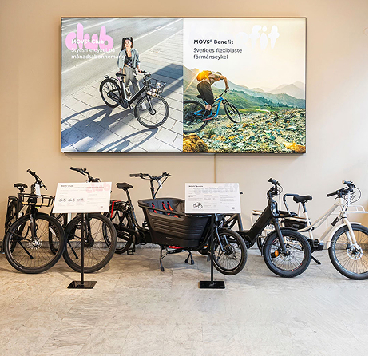
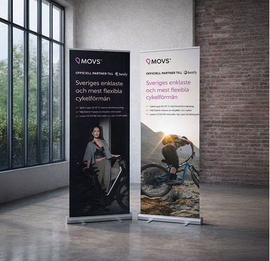
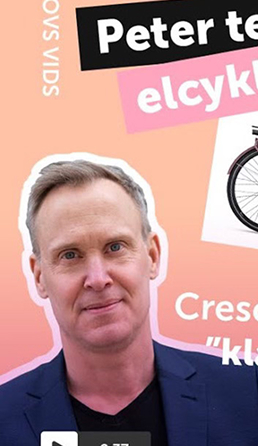
Work MOVS
I work across design, content, and photography, shaping visual communication for digital and physical platforms. My role blends creative direction with hands-on production, from campaigns and social media to product imagery and brand expression.
See work →
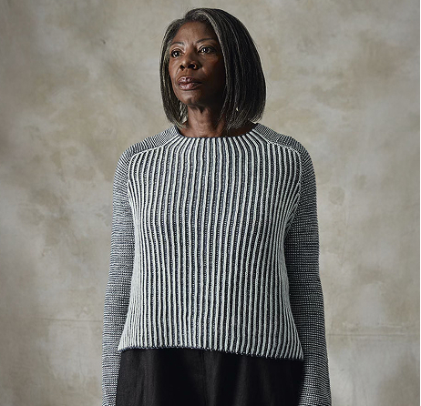
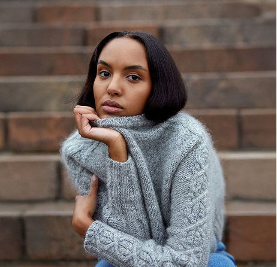
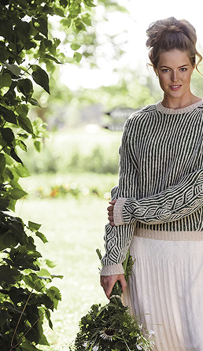
Work Anna Strandberg Design
I design knitwear and develop patterns with a strong focus on texture, form, and storytelling. My work has been published in international knitting magazines, with a book publication on the way.
See work →
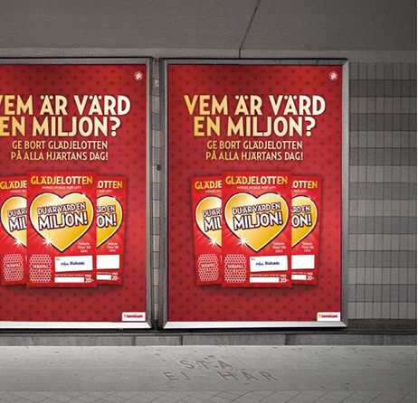
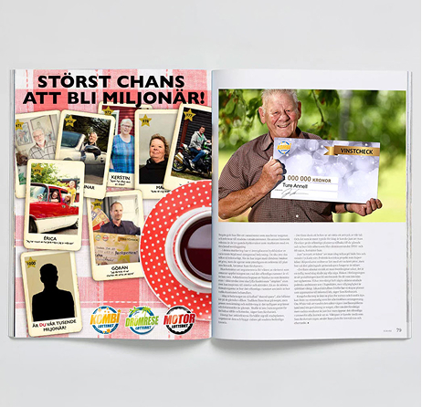
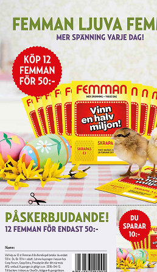
Work Kombispel
I worked with branding, campaigns, and visual concepts across multiple channels. My role included both design execution and art direction, developing clear and engaging communication.
See Project →
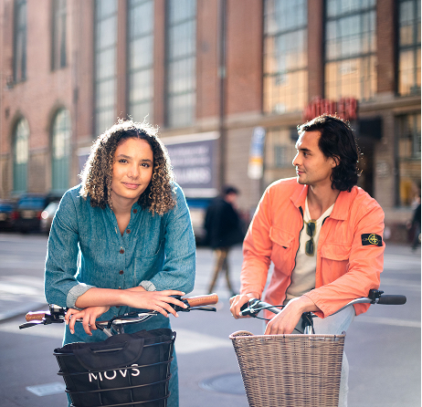
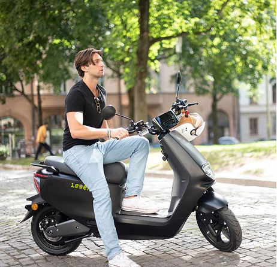
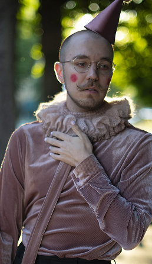
Work Product Photography
Working across studio and environmental photography, I capture products with a focus on texture, light, and presence. From small, tactile objects to products in use, I aim to create imagery that feels both considered and alive.
See Project →
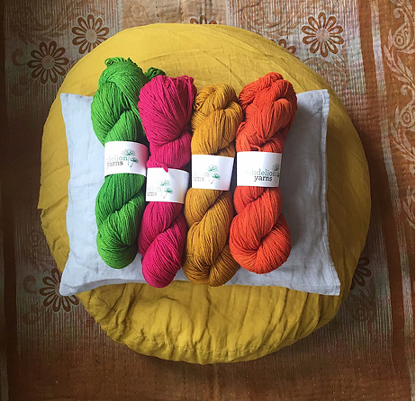
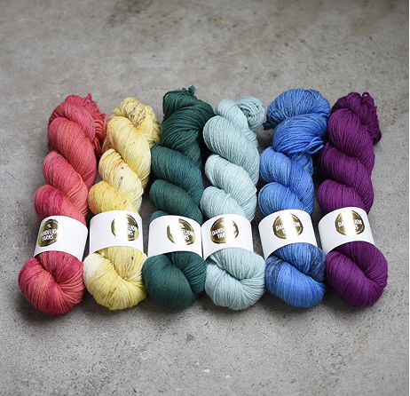

Work Dandelion Yarns
I founded and ran a hand-dyed yarn brand, creating color stories and collections from concept to finished product. The work combined craftsmanship, visual identity, and community-building through a strong presence on Instagram.
See Project →